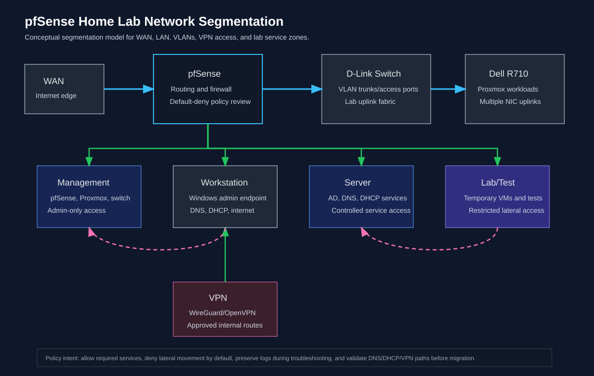

Reduce support ambiguity through clear network boundaries.
Document where traffic should flow, where management access should be restricted, and what validation evidence is required before broader lab migration.
Case Study
A lab architecture case study for VLAN separation, firewall boundary intent, DNS/DHCP placement, VPN access review, and validation planning without claiming completed live migration.

Executive Summary
This case study explains a pfSense-oriented segmentation model for separating WAN, management, workstation, server, lab/test, and VPN access zones. The evidence is methodology and architecture documentation, not a claim that every firewall rule has been validated on live systems.
Document where traffic should flow, where management access should be restricted, and what validation evidence is required before broader lab migration.
Technical Environment
The documented lab context includes a 192.168.0.0/24 base network, Dell R710 lab workloads, a D-Link switch, Proxmox, Active Directory-style services, DNS, DHCP, VPN access, and pfSense as the firewall and routing control point.
Architecture Overview
The architecture separates internet edge, management, workstation, server, lab/test, and VPN paths. The design emphasizes restricted management access, documented service flows, logged troubleshooting windows, and policy review before expanding remote access.
Implementation Approach
The implementation plan records zone purpose, typical systems, default-deny assumptions, allowed service requirements, DNS/DHCP dependencies, VPN route review, and evidence still required from pfSense or switch exports.
Confirm gateway, VLAN, DNS, DHCP, firewall, and VPN behavior with documented checks before presenting the design as implemented. Keep checklist results separate from planned methodology.
Network evidence is most credible when design intent, service dependencies, firewall policy, and required validation artifacts are separated from unverified completion claims.
Related Evidence
Architecture documentation for pfSense segmentation goals and evidence boundaries.
Open EvidenceVisual map for firewall zones and network boundaries.
Open DiagramOperational walkthrough for VLAN strategy and Proxmox bridge review.
Open WalkthroughMethodology for recording gateway, VLAN, DNS, DHCP, VPN, and firewall test evidence.
Open Checklist{kind=link}